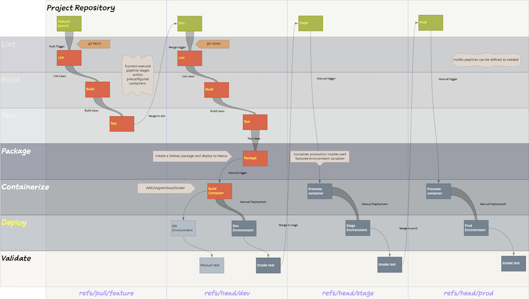
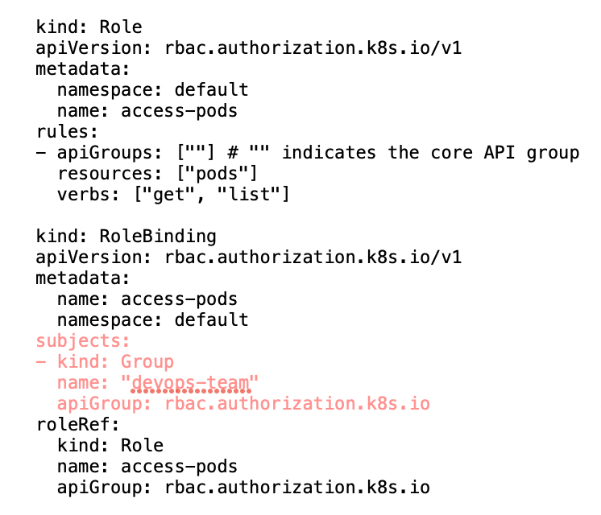
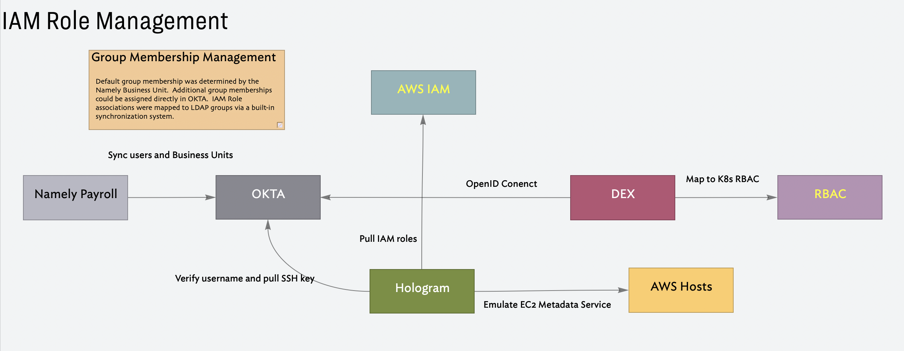

Work History
Sabbatical
| Dates: |
Jan 2023 - Jun 2024 |
HouseCanary
| Dates: |
Apr 2017 - Aug 2022 |
| Role: |
Lead, Principal Engineer |
| Technologies: |
aws, docker, freeipa, hologram, okta, packer, prometheus, sourcegraph, vagrant, virtualbox |
| Programming Languages: |
bash, python |
| DSLs: |
ansible, make, terraform |
Objectives
Review and select a version control system to replace GitHub. The solution should allow for self-hosting company repositories; It should also provide support for version controlled pipelines. Migrate the company repositories from GitHub to the new system. Upgrade all builds to use the new build sub-system.
Responsibilities
I was responsible for reviewing and selecting a version control system to self-host the company’s repositories and provide a common build system. I was responsible for migrating all source control from GitHub to GitLab and for ensuring that all builds were standardized to use the Gitlab CI DSL.
S3 Migration
Objectives
Mirror all buckets in us-west-2 to us-east-1. This was to meet an early failover scheme.
Project Deliverables
All buckets were migrated across.
Github 2 Gitlab Migration
Objectives
Migrate corporate repositories hosted on GItHub to an internal managed cloud-based GitLab infrastructure to satisfy regulatory requirements from Bank clients. Several repositories on GitHub were public to support open source initiatives. Github would continue to be used for these.
Responsibilites
I was solely responsible for migrating 310 repositories from GitHub to GitLab.
Key Challenges
The entire GitHub repository needed to by copied over to the Gitlab infrastructure. The new system needed to run as a slave instance to Github. Errors in migration and replication needed to be investigated and addressed.
Technical Details
Github repositories were mirrored into Gitlab, these instances were read-only. For select users in each engineering group git configurations were adjusted to read from the mirror and push to the active Github repositories. This allowed teams to verify the integrity of the mirrors and identify problems with data integrity and completeness.
During the cutover I worked with one team at a time to:
- disable mirroring between the two systems
- put the GitLab repositories into read-write mode
- reconfigure the git remote push targets
- put the team’s GitHub repositories into read-only mode
Project Deliverables
After months long testing and verification the entire company was cut over a couple of hours on Friday afternoon. There was never any need to revert to the original system.
Current State
Github was decommissioned, after about 6 months the original repositories were dropped.
Gitlab Build/Deploy Standardization
Objectives
Unify build and deploy for all internal and customer facing systems.
Responsibilites
I was responsible deploying and maintaining a gitlab runner architecture. I was tasked with unifying all builds and deployments with versioned build/deploy pipelines. I migrated engineering teams workflows to use the new system.
Key Challenges
At the start of the project the following approaches were being used:
- Running Ansible from a local laptop with uncommitted playbooks
- Checking code out directly to deployed AMI’s and building in production
- Updating production AMI dependencies by hand
- Deploying docker containers via AWS ECR
- Developing code on Vagrant images
- Applying uncommitted terraform by hand
This set the following obligations:
- Support building docker, vagrant and AMI images
- Centralize terraform code and guard against concurrent apply operations
- Collect all local automation and manual processes, translate them into Gitlab CI
- Get sign-off from all engineering groups
Technical Details
A Build testing, promotion and deployment sequence was developed and defined in Gitlab CI. This approach was implemented and tested with an internal anchor client. Once this working the schematic and implemented internal solution were provided as a reference to other teams.

The initial standardization goal was to have all existing builds and deployments in the company running with pipeline definitions that were in source control. Further work on unifying builds followed subsequently.
Project Deliverables
All builds were unified on this system. Developer environments were moved off of Vagrant and onto Docker. All builds were containerized; custom AMI’s were fully deprecated. A common deployment workflow for all containerized systems was established.
Current State
With the help of this system, the company migrated all deployments to docker containers. Once this was an achieved deployments were fully standardized across the frontend, research, data and infrastructure teams. The gitlab runner architecture was decommissioned.
Infrastructure Automation
Objectives
Ensure that all cloud infrastructure is fully managed by versioned terraform configurations. Ensure that all terraform applications are managed by the gitlab runner infrastructure.
Responsibilites
I was responsible for supporting the migration of the terraform code into GitLab and ensuring that all terraform operations were run in the context of the gitlab runners. A critical aspect of this work was to start the process of converging on a single version of Terraform. Subsequently, I worked on implementing Terraform Modules to standardize common patterns.
Key Challenges
Common resource patterns were not reflected in Terraform. Each product, sub-system, resource type had inconsistent implementations. There were a range of Terraform versions deployed in production which resulted in frequent unintended upgrades to local development environments and occasional applications of these , often breaking, upgrades to production.
Technical Details
The company settled on using multiple AWS accounts. These accounts mapped to product classes and environments. For example, front-end products had environments for development, testing, customer verification, staging and production. The terraform for these environments was essentially the same. In order to factor out the variables the team added a higher layer of abstraction using Terragrunt. In the example above, the same terraform could be used for all five environments, the only difference was the environment specific parameter file.
Project Deliverables
Company wide deployments stabilized on a single version of Terraform. Development of a common set of Terraform modules was started. These were incorporated into the codebase enabling the team to normalize the Terraform codebase and reduce significant duplication.
Current State
All deployments are managed by Terraform and a standard set of common patterns has been encoded in company specific modules.
Kubernetes
Objectives
Provide a Kubernetes-based system to host DevOps infrastructure.
Responsibilites
I evaluated and prototyped an on-premise Kubernetes cluster. I needed to ensure that we could guarantee interoperability with our IDP infrastructure running on openIPA/.
Key Challenges
Support integration with the existing IDP and IAM role system.
Technical Detail
When user’s joined the company they were assigned to a business unit in Namely (https://namely.com/). These entries were synchronized with FreeIPA/OKTA. Within the LDAP system Business Unit membership provided additional default group memberships. These LDAP groups mapped to AWS IAM roles which were assigned to hosts at launch time.. A critical test case was to support these relationships in a Kubernetes environment. I used DEX (https://github.com/dexidp/dex/blob/master/README.md) to provide a bridge from Kubernetes RBAC roles into our IDP system.
The group name in this RBAC role binding mapped directly to the group in the LDAP system and mapped to the appropriate role in AWS IAM.


Project Deliverables
A working prototype with IDP/IAM role integration was demonstrated on an internal Kubernetes cluster.
Current State
This prototype was not deployed to production. The overall technical direction favored the AWS Elastic Container Service (Amazon Elastic Container Service (ECS) )) and AWS Elastic Container Registry (Amazon Elastic Container Registry (ECR)).
GitLab Runner to Teamcity Migration
Objectives
Unify company build agents using TeamCity infrastructure. Decommission the GitLab runner infrastructure.
Responsibilites
Migrate containerized builds to TeamCity. Disable migrated builds on the Gitlab runner infrastructure. Decommission the Gitlab Runner infrastructure.
Key Challenges
This was a fairly cut-and-dried task. The heavy lifting was completed during the Build/Deploy Standardization and Infrastructure Automation work.
Technical Details
The final stage of build standardization was to migrate all deployable systems to Docker containers. Once this was complete, builds and deployments could easily be templatised.
Project Deliverables
All builds and deployments were moved to TeamCity which had always been in use for a subset of front end systems. The Gitlab runner infrastructure was fully decommissioned.
Current State
The Gitlab Runner infrastructure was fully decommissioned.
SentientEnergy
| Dates: |
Aug 2015 - Feb 2017 |
| Role: |
Team Lead |
| Technologies: |
ansible, aws, jenkins, mysql, nagios, packer, postgres, vagrant, virtualbox, vsphere |
| Programming Languages: |
java, python |
| DSLs: |
ansible, sql |
Objectives
Implement DevOps best practices to accelerate the Enterprise platform development. Minimize deployment failures. Provide additional support for mobile sensors by developing a cloud-based deployment system.
Responsbilities
I managed a distributed development team as well as a remote team of DevOps contractors. I was responsible for working with the management, product and QA teams, Customer success and 3rd party points of contact to improve internal build, testing, deployment and monitoring processes.
Key Challenges
The company’s primary line of business is designing and building hardware devices. Development cycles are long and testing is very intensive. A key goal was to decouple the software development cycle from the hardware verification testing cycle. Development of the enterprise software layer needed to accelerate with faster iterations and reduce testing times. Automated testing during the Jenkins build process was enhanced and internal release cycles were shorted.
Deployments to customer environments were infrequent and were not well automated or easily reproducible. A significant effort was made to build out a robust set of Ansible playbooks. Stabilizing these deliveries was a key goal of the management team.
We relied on VMWare virtualized environments to host the system. Providing reliable monitoring of the underlying virtualization layer was another critical task.
Finally, communication between teams supporting hardware development, enterprise software, testing and management was extremely demanding. Coordination overhead was a constant challenge to manage.
Technical Details
In the common case, the system was deployed into colocation facilities managed by client power companies. The Ample platform provides a single entry point to view measurements, status and configurations for the sensor fleets. Additionally, operators can manage and verify sensor configurations and upgrade the device firmware via OTAP.
The sensors communicate via a radio mesh network and communicate using the DNP3 protocol. The protocol is point-oriented. Its primary use is for configuring individual numerical and boolean values. Commands sent from the Ample interface are consumed by the Sensor Gateways which handle a set of sensors and marshall data to and from DNP3.

Because DNP3 is a connectionless protocol, akin to UDP, and point-oriented, building up data-series datasets required quite a bit of care. All communication to and from the field is asynchronous and conducted over very low-bandwidth. Operations to collect time-series data cached on individual devices can take hours and some procedures take days to complete.
As the product line evolved, smaller power companies expressed interest in fleet management over WiFI. In order to address these use cases, a cloud-based deployment was added to the company’s offerings.
Current State
These products are still in production.
Colleagues
Ample Product implementation
Objectives
Maintain a central console of deployed sensor networks. Enhance graphs for sensor monitoring statistics, device configuration management and endpoint software upgrades. Provide map views of sensor deployments.
Responsibilites
I was responsible for managing the development team. This was a 3rd party group, and the majority of the team was in Bangalore. I worked to communicate product and management expectations for feature development and was the owner of the bug queue.
Key Challenges
Most of quality issues were related to asynchronous communication issues between the Sensor Gateways and the sensor devices. Failure conditions identified in the testbed were difficult to assess and even harder to reproduce. Verifying bug fixes was not always deterministic. Customers were deploying 1000’s of sensors and the internal test beds hosted 10’s. Scale testing depended on experimental device emulators implemented in software.
Technical Details
The sensor deployment maps relied on a Voronoi diagram data structure.
Project Deliverables
Product improvements and bug fixes were pushed several times a week. The sensor deployment maps were a new feature that was delivered to production.
Ample Continuous Delivery
Objectives
Improve internal development and release processes. Build and test multiple times a day to decouple the enterprise software development cycle from the slower hardware and embedded software testing cycles.
Responsibilites
I was the primary owner for testing capability. I worked with the wider team to ensure the unit-tests kept pace with feature development. Additionally, failures reported during testing were added to the unit-test backlog
Key Challenges
The system can be split into two domains. The enterprise layer up to the data bus was the portion addressed here. The challenge was to facilitate testing of the upper-half of the software stack without depending on full end-to-end testing.
Technical Details
Communication between sensor devices and the enterprise layer is asynchronous. Developing a suite of test-fixtures modeling different messaging scenarios allowed the team to verify two main use cases on the data and command queues.
Data acquisition
1. Processing of cached time series data
2. Processing of fault and waveform data
Device Configuration and OTAP Upgrade
1. Modifying device configuration
1. Updating device firmware via OTAP
A queue consumer client tool was developed to ‘emulate’ messages to and from a sensor gateway.
Project Deliverables
The pace of iteration for the enterprise layer was successfully decoupled from the release cycles of the sensor gateway and sensor devices. Several versions of the system were internally released on a weekly basis. This accelerated product development and reduced fix-times for reported issues.
Ansible Automation
Objectives
Configure and manage deployed environments. Support new installations, upgrades, and sensor gateway scaling.
Responsibilites
I worked with the operations team to learn the history of deployments and to build up a set of goals for the automation. I helped implement some of the playbooks and was responsible for verifying the new playbooks during production releases.
Key Challenges
Full verification of the playbooks, especially when there were customer specific modifications were not verifiable in the customer colocation facilities.
Technical Details
Testing and verification of playbooks was mocked against an on-premise Vsphere deployment.
Project Deliverables
The Ansible playbooks were significantly improved.
Remote On-Premise Deployment
Objectives
Reliably deliver new releases of the Ample Management System and Sensor Gateway to customer data centers.
Responsibilites
I was the principal on several of the early deployments. Train additional team members on deployment procedures.
Key Challenges
The infrequency of deployments to customers made full verification slow.
Technical Details
These deployments upgraded versions for the Ample console, and Sensor Gateways. Changes to the MySql database schema
Project Deliverables
Remote deployments were stabilized. Management and customer confidence levels improved. The improved system was used to manage Florida Power and Light (FPL) and Pacific Gas and Electric (PG&E). Additional team members started to take the lead on deployments.
VSphere/Application Monitoring
Objectives
Build out infrastructure to monitor virtual instances at the resource and application level.
Responsibilites
I worked with our IT/Ops team to specify resource level monitoring. I worked with the Enterprise Development team to start developing application entry-points to provide system-level observability.
Key Challenges
Restricted access to customer facilities was available from a single virtual image; the Nagios dashboards were not accessible to the ops and dev teams. Alerts were received via email. The descriptive content of the alert messages was especially important. Customer operations teams did not know how to interpret alert events and were not able to take corrective action. Issues were resolved over the phone with customer teams or by directly accessing the remote installation.
Technical Details
Nagios was chosen for monitoring and Perl was used for plugins. The Nagios Remote Plugin Executor (NRPE) facility was the preferred delivery mechanism.
Project Deliverables
A set of resource level monitors was incorporated into the Nagios configurations which were added to the suite of services deployed to customer environments.
SocialCode
| Dates: |
Jun 2012 - Aug 2015 |
| Role: |
Lead |
| Technologies: |
caktus, cassandra, celery, graphite, jenkins, kafka, neo4j, redis, redshift, vagrant, zookeeper |
| Programming Languages: |
erlang, java |
| DSLs: |
chef, sql, tla+ |
Objectives
Provide infrastructure, named CoreData, to collect campaign metrics from various social networks. Ensure that the acquired data is well understood and store this data in databases to serve use cases from research and product development.
Responsibilities
Specify, design and implement the CoreData system. I led the group of two engineers. I was involved This was a greenfield project.

Key Challenges
The biggest challenge was interacting with stakeholders while designing, building and deploying the system.
Colleagues
Current State
Unknown, I left the company in 2015.
CoreData Crawler
Objectives
Provide a reliable mechanism for managing statistics crawling across the various social media sites used for ad campaigns. Crawls should be easy to configure without impacting other ongoing crawls.
Responsibilities
I implemented this system.
Key Challenges
Design a simple configuration language to express crawl requirements across different social networks. Provide an easy way to add new crawl endpoints, expose crawl progress on a per-vertical basis with fault tolerance and ease of debugging
Technical Details
The system was implemented in Erlang.
Project Deliverables
A performant production ready implementation was provided.
Current State
The company decided to stick with an earlier implementation relying on Celery and Django. This was never deployed to production
CoreData Gateway
Objectives
Provide an entry point receive datasets published by the CoreCrawler infrastructure. Validate these data against registered schemas and publish valid data to the Kafka cluster. Preserve a history of all data acquired by the company.
Responsibilites
I was the sole implementer of the CoreData Gateway.
Key Challenges
In addition to schema validation The server was also a client to S3 and Kafka. The interface needed to expose performance characteristics of the Kafka bus and provide detailed error messages.
Technical Details
An error dictionary was defined with codes so that the crawler infrastructure could programmatically respond to problems. If the kafka clients were failing, publishing would be stopped, if validation errors for a data metric were failing crawling for this would pause until the change in expected output was analyzed and properly reflected in the schema validation phase.
The REST interface
Project Deliverables
A stress tested system was deployed to production in less than two months.
Current State
Kafka Infrastructure
Objectives
Provide streaming access to campaign performance data with durability. Support an arbitrary number of consumers on this data.
Responsibilities
I implemented the Kafka cluster and was responsible for testing failure scenarios with downed partitions. Performance testing and capacity planning were also addressed.
Key Challenges
Ensuring that the interaction of Kafka with Zookeeper and the various failure modes was well understood by other members on the team.
Technical Details
I chose a 3-node cluster for our system. The supporting Zookeeper cluster was also run on 3 nodes. A main objective of the was to support the loss of one Amazon Availability Zone. Each zone hosted one instance of Kafka broker and a Zookeeper node.
Project Deliverables
This infrastructure was delivered into production running in three Amazon Availability Zones.
Current State
This data bus was still running in production when I left the company.
CoreData Data Transformation Pipeline
Objectives
Consume data published to Kafka queues by the CoreGateway infrastructure. Transform this data for different use cases and database targets.
Responsibilites
I was responsible for working on the specification and providing design review for this component.
Key Challenges
Several downstream databases needed to maintained, this pipeline needed to write subsets of the incoming data
Technical Details
The processing pipeline was implemented with Apache Storm.
Project Deliverables
The essential functionality required to maintain the MySql and Redshift databases was deployed to production. Additional work was under development to support Neo4J and Cassandra.
Current State
This pipeline was running in production at the time I left the company.
CoreData Realtime Query Infrastructure
Objectives
Provide a query interface to access data published into the Kafka. Enable end-to-end verification of CoreGateway publishing and Kafka cluster integrity. Enable performance testing of the data bus. This also provided a mechanism for product and research to explore new ideas.
Responsibilites
I implemented this system.
Technical Details
This subsystem provided a REST interface to a Kafka client.
Project Deliverables
This system was an essential component in QA testing of the data pipeline. In addition to data integrity it provided a mechanism for testing latency on the databus. The research team also leveraged this to research potential new features.
Current State
This system was running in production when I left the company.
CoreData Media Metrics Explorer
Objectives
Provide access to campaign statistics published by third party social networks. Product teams could define calculations over the raw statistics to quickly generate client specific data sets.
Responsibilites
I defined the DSL for this REST interface. Users could install simple formulas to calculate compound metrics. The interface hosted an expression parser to calculate these additional metrics on the fly.
Key Challenges
Allow user’s, primarily product, to access data using their own naming. The system needed to support easy aliasing of campaign metrics and compound metrics specified by the product team.
Technical Details
Examples of interacting with this interface are here courtesy of Dave Rogers who was the principal implementer:
This interface was implemented in TastyPie http://tastypieapi.org and was a solid effort to follow the HATEOS architectural style. A principle integration point was the Facebook OpenGraph API which followed this pattern as well. Critical inspiration came from:
Project Deliverables
This service was delivered to production along with training videos. It was accessible to all employees in the company.
Current State
This was service was still running in production when I left the company.
Digg
| Dates: |
Jun 2011 - Jun 2012 |
| Role: |
Developer |
| Technologies: |
cassandra, celery, Django, ganglia, hadoop, hbase, hive, hudson, jenkins, memcache, mongodb, mysql, open-tsdb, redis, solr, thrift |
| Programming Languages: |
python |
| DSLs: |
chef, puppet, sql |
Objectives
Help stabilize and optimize recently deployed infrastructure and add a new integration with the Facebook OpenGraph.
Responsibilites
Improve visibility into the recently deployed infrastructure. This effort focussed on OpenTSDB as the recorder for performance metrics generated across the micro-services layer.
Key Challenges
Digg had completed a significant migration of its backend systems from MySql to Cassandra. This resulted in stability and performance issues. There was a wide range of additional technologies under the hood. Understanding the feature to tech-stack mappings and instrumenting the system to collect metrics grouped by call stacks was challenging. One goal was to leverage OpenTSDB to capture reliable time series information to improve visibility of overall system performance.
A second goal was to remain competitive in the social news space at a time when Facebook was entering the social news market. Digg was an early integrator with the new OpenGraph news offering from Facebook.
Technical Details
The social news integration with Facebook was implemented on their OpenGraph.
Project Deliverables
I integrated Digg data into the Facebook OpenGraph to support a ‘social reader’. Facebook had an initial launch of this new facility with a selected group of participating companies.
Current State
The original company was dissolved. The IP was sold to LinkedIn, the engineering team went to SocialCode in an acquihire, and the brand was sold off to a 3rd party. It remains an active product.
Colleagues
Yahoo! WOO
| Dates: |
Nov 2010 - Jun 2011 |
| Role: |
Senior Technical Yahoo! |
| Technologies: |
hadoop, hbase, hdfs |
| Programming Languages: |
java, pig, tla+ |
| DSLs: |
oozie |
Objectives
Generate an entity graph and update this regularly by processing authoritative data feeds from Twitter, Flickr, Yahoo! Search, etc. Generate ranking indexes based on graph entities.
Responsibilites
I helped implement a data scoring pipeline designed by the data research team. This was a dataflow graph of calculations for conditional probabilities, entropy, cosine similarity, kl divergence was run on a Hadoop cluster. The processing output was a new search ranking which was published to the indexers.
Key Challenges
The research code was written in Java. Each statistic was a separate class and these needed to be run on a Hadoop cluster to support the volume of data. This required moving the functions into the PIG programming language as User Defined Functions (UDF’s). Since there were data dependencies between several of these functions the integration needed to be deployed as a data-flow-graph. This was implemented in Oozie.
Technical Details
At the time this work was implemented the failure of a single Pig Function would fail the entire Oozie workflow. Calculations were running on a 4K node cluster making it infeasible to identify which UDF instance was failing on which input. I could determine which stage of the workflow was failing. With this I studied the implementation of the function and estimated that the function was quartic ( n^4). Was I right ? One of the data sets consumed with this function were queries run against the Yahoo! Search engine … and yes there were queries with more than 100 terms. Rejecting queries with more than 20 terms ended the problem.
Techniques Used
• Estimating algorithmic complexity for functions written/published from different teams
Project Deliverables
The data flow graph of statistical calculations provided by the Research Team was delivered as an Oozie controlled workflow.
Current State
Unknown. I left Yahoo! In 2011 and this was an internal project active at the time of my departure.
Colleagues
Yahoo! Cluster Management
| Dates: |
Dec 2009 - Oct 2010 |
| Role: |
Senior Technical Yahoo! |
| Technologies: |
zookeeper |
| Programming Languages: |
java, perl, tla+ |
Objectives
Support auto configuration and provisioning of cluster hosts using a distributed agent architecture. Auto configure new machines via PXE boot. Self register to a zookeeper cluster in order to publish status and to receive provisioning and management operations.
Responsibilites
I was responsible for writing the endpoint agent which received and implemented the command sets to manage traffic, image deployment, application control and diagnostics.
Key Challenges
The system was designed to support several deployment scenarios:
- Clean Installation
- Replacement upgrade
⁃ Deploy a new tier with the desired capacity and configurations
⁃ Cut-over to the new tier and release resources on the deprecated tier
⁃ Return deprecated hardware to the machine pool
⁃ Remove a subset of machines from active serving in the tier and upgrade
⁃ Enable newly provisioned machines and repeat sequence until all machines are upgraded
⁃ In some cases the architecture will change and the upgrade is more accurately described as shifting traffic to a new service. This can be viewed as an extreme case of the Replacement case, in that Replacement is really a per Tier concept, whereas this upgrade is on a Service as a whole.
⁃ Automated provisioning of hardware to replace broken hardware, subject to security and rate-limiting.
⁃ In the case where some error occurs during or after the upgrade, the SE determines:
1) Whether the error is systemic across the tier(s). If it is, the whole deployment is rolled back.
2) Whether the error affects isolated hosts. If so the SE determines whether to take the hosts out of rotation, which would occur if the number affected is small, or roll back if the number affected is large. (Except in the case of hardware failure, such failures indicate a failure on the part of the CSI to uniformly deploy. Nonetheless, we should provide a means of dealing with the case.)
Technical Details
Machines booted via PXE and installed a remote agent. This agent would manage multiple virtual environments configured as chroot jails. Additional Yahoo proprietary virtualization and package managers were incorporated into the base-builds.
Zookeeper was used as the controller. The implementation needed to support the following scenarios
1) provide a persistent store of configuration information
2) provide a reliable means of signaling state change information to trigger deployments
3) provide a reliable means of signalaing success or failure of a requested operation
4) provide a means to indicate the completion of a set of work
5) handle cases of incremental node addition
6) prove that the routine always ends up in a completed state [ i.e. no more work in progress ]
7) provide an audit trail for a given node configuration - i.e. log the set of ip addresses for auditing purposes.
Project Deliverables
A working implementation of the endpoint agent was delivered.
Supplementary Details
The PXE Client/Server environment was designed so it can be seamlessly integrated with an already in place DHCP and TFTP server infrastructure. This design goal presented a challenge when dealing with the classic DHCP protocol. Corporate DHCP servers are usually subject to strict policies that are designed to prevent easily adding the additional parameters and rules required to support a PXE environment. For this reason the PXE standard developed the concept of DHCP redirection or "proxyDHCP". The idea behind a proxyDHCP is to split the PXE DHCP requirements in two independently run and administered server units:
The classic DHCP server providing IP address, IP mask, etc. to all booting DHCP clients.
The proxyDHCP server providing TFTP server IP address and name of the NBP only to PXE identified booting clients.

In a DHCP plus proxyDHCP server environment[3]: 18 the PXE client initially broadcasts a single PXE DHCPDISCOVER packet and receives two complementary DHCPOFFERs; one from the regular non PXE enabled DHCP server and a second one from the proxyDHCP server. Both answers together provide the required information to allow the PXE client to continue with its booting process. This non-intrusive approach allows setting a PXE environment without touching the configuration of an already working DHCP server. The proxyDHCP service may also run on the same host as the standard DHCP service but even in this case they are both two independently run and administered applications. Since two services cannot use the same port 67/UDP on the same host, the proxyDHCP runs on port 4011/UDP. The proxyDHCP approach has proved to be extremely useful in a wide range of PXE scenarios going from corporate to home environments.
Current State
The service was never deployed and the project was shutdown.
Colleagues
Yahoo! BOSS
| Dates: |
Jun 2008 - Nov 2009 |
| Role: |
Lead |
| Technologies: |
apache, rabbitmq, vespa |
| Programming Languages: |
c, c++, erlang, java |
| DSLs: |
make, sql |
Objectives
Enable users to build custom search engines. Support user defined schemas for privately published vertical search data sets. Provide query blended results combining data from the customer’s vertical search and the Inktomi web crawler.
Key Challenges
The backend for this service was deployed as a service oriented system to accommodate the asynchronous behavior of the indexing and query pipelines. There was existing code written in various languages, owned by different teams, which needed to be coordinated. End users needed to be able to observe the progress of schema definition and indexing processes.
Technical Details
The backend for this service was deployed as a service oriented system with RabbitMQ as the bus. The components were written in different languages, Java, C, C++ and Erlang interacted with MySQL, VESPA, and the larger web crawling infrastructure. Coordination of schema validation, vertical search instance configuration and the processing of uploaded structured data was managed by a central workflow manager implemented as a distributed state machine. Inspectability of the incremental progress through the system allowed the UI to publish progress as data was loaded, or query result sets were fetched and merged from VESPA and the Web crawling infrastructure. RabbitMQ as a message bus for command and data channels. This allowed us to leverage the various components and developers could work with their preferred technology.
The VESPA vertical search engine technology is in the same family as Lucene and SOLR. Once a published schema was validated, a vertical search index was created. Data feeds published to the index were validated against the inferred types in the published schema before being loaded into the search engine. The product allowed 3rd parties to leverage the Yahoo!/Inktomi search engine. Additionally, users could define their own structured data schema which allowed them to publish structured data and host it in a bespoke Vespa instance. Query results could be a blend of structured results and open search results returned by the Yahoo!/Inktomi search API.
Project Deliverables
The product was launched with support for user defined vertical indexes. Queries combined hits from the customer’s indexes and hits from the Yahoo! Search engine.
Current State
The service was shutdown in 2016.
Colleagues
Delicious
| Dates: |
Jun 2006 - Jun 2008 |
| Role: |
Developer |
| Technologies: |
apache, mysql |
| Programming Languages: |
c++, erlang, perl |
| DSLs: |
make, sql |
Objectives
Provide a simple way to save URLS, associate them with tags. Support publishing url sets via RSS, and social discovery.
Responsibilites
I was responsible for guaranteeing reliable migration of the legacy data to the new data architecture. I implemented the sql query generator for the new federated system. I also implemented the migration system to support bi-directional migration between the original infrastructure and the new federated database layer.
Key Challenges
Provide a logic to map incoming URL query strings to federation aware SQL queries. Provide a robust mechanism for migrating the original data into the new federated system. This solution needed to support data integrity testing, tear-down and rebuild of the new data sub-system and support launch-time scenarios.
Technical Details
Data Migration
The database organization of the acquired company had all the warts and faults of a fast developing product. In addition to inconsistent schema changes, there were inconsistencies in data formatting which were managed by a special layer of data munging code. Additionally, different features on the site depended on different master/slave configurations. The original system used over 30 database instances. Our target was 6 clusters of master/slave triples requiring 18 databases.


- Transform source data schema into target schema
- Leverage existing data-scrubbing code - as implemented - to maintain data integrity.
⁃ This was achieved by running the Perl scrubbing code within Erlang processes as the data was read from the source infrastructure.
- Dynamically scale source read / target write rates to ensure that processing hosts didn’t run out of memory due to queue backlogs.
⁃ The Erlang VM on the processing hosts was instrumented to monitor machine memory and use an exponential back-off on the data readers to accommodate memory surges.
- Provide robust - queryable log to track failed writes into the new installation
⁃ Data processing logs were written to Mnesia which made it easy to aggregate processing results from multiple replication hosts and simple to query
- Allow easy rebuilding of gold-masters as the federated database system was hardened. We ran around 30 full migrations during testing and development. A full migration could be achieved within ~24 hours.
⁃ The fault tolerance capabilities of Erlang were critical, write operations were scoped to individual Erlang processes which localized failure and retry at the most granular level
- Support a live replication from the original topology to the new system
⁃ At launch the original database configurations handled writes and reads were served from the new infrastructure. The migration logic maintained live parity between the two systems until stake holders were comfortable cutting writes over to the new system.
- Provide a reverse replicator to write data from the new data sub-system to the original databases.
⁃ This was a fail-safe. Allow the team to cut back to the old system after writes had started flowing to the new databases.
Query Generator
This code needed to map incoming URL query strings into the underlying - federation aware - SQL. In the simple case a user was accessing their own data and this was a single query mapped to a single cluster. Accessing tagged data from a user’s social network would require multiple concurrent queries. There are a few more scenarios which I can no longer recall. The query generator logic was executed in the Apache Servers providing the Federation Layer.
Techniques used
There was existing legacy perl code which managed the various ‘special cases’ in the original data. This code was running in production and needed to be incorporated into the migration logic. At the same time this needed to be runnable in a parallel concurrent environment. Erlang was used for the concurrency layer. The production interface provided a log table of all transactions executed in production. This ‘queue’ was consumed by migrator nodes. The log tracked CREATE, UPDATE, DELETE operations for user histories. A migrator node would consume the command history for a given user and replay the command sequence against the new federation layer.
There were multiple migrator nodes and each was assigned the set of users that mapped to a particular federation cluster. These nodes needed to monitor host memory to slow down reads from the queue based on the performance characteristics of the data scrubbing and write operations. This was done by monitoring local memory and adjusting read rates with a backoff. Each record ( a url with tags and comments etc. ) was passed through the perl scrubbing code in the Erlang environment. This leveraged a perl marshaling layer to pass the Erlang representation read from the queue into perl accessible formats and to convert the ‘scrubbed’ data back into Erlang types before writing them to the federation layer. All operations were logged in a distributed in-memory database which made it easy to track progress and verify extremely low failure rates. I was able to run 100’s of perl interpreters on a fleet boxes to increase the throughput of the overall migration process.
The query generator was implemented using the BOOST Spirit Recursive Descent Parser Generator.
Project Deliverables
The query generator was deployed to production. Multiple (~30) full migrations were executed. This supported development, stress testing and verification. During the process of launching the new Delicious architecture this system provided bi-directional replication.
An experience report was presented at the Commercial Users of Functional Programming conference in 2008.
Developing Erlang At
Current State
Yahoo! sold delicious to AVOS in 2011.
Colleagues
Yahoo! Photos
| Dates: |
Jun 2005 - Jun 2006 |
| Role: |
Developer |
| Technologies: |
mysql |
| Programming Languages: |
c++, sql |
Objectives
Provide a single storage location for sharing personal photos. Support social sharing and publishing physical albums through 3rd party publishers.
Responsibilites
Key Challenges
Yahoo! Photos was scheduled for shutdown in the midst of a redesign. A key effort was to identify what technologies could be salvaged and repurposed for the Delicious integration
Project Deliverables
The federated database design which was at the core of the Yahoo! Photos rewrite was the technology salvaged for the del.icio.us integration .
Current State
Yahoo! Photos was shutdown in 2007 in favor of Flickr. Flickr was spun off from Yahoo! In 2018.
Colleagues
Yahoo! News
| Dates: |
Dec 2004 - Mar 2005 |
| Role: |
Developer |
| Programming Languages: |
perl |
| DSLs: |
xml |
Objectives
Provide a centralized news hub for the news products published on Yahoo! Properties. Standardize storage and data organization to enable easy cross-product ( vertical ) access to news.
Responsibilities
I was tasked with developing programmatic interfaces to the various data schemas pushed from Yahoo properties. These interfaces mapped the underlying XML fields to the common data schema used for the news hub.
Key challenges
This news hub was collecting news from verticals across yahoo: Sports, Entertainment, Finance, World News etc. The incoming news feeds need to be decomposed into common elements in a generic news schema developed for the news hub.
Technical Details
This library parsed a DTD and generated accessors named according to the taxonomy of the publishing vertical. This made it straightforward to provide facade classes to process disparate news sources using the taxonomy declared for the news hub.
Techniques used
Generating an API from a DTD for the incoming news source. Automatically generating a library interface over the respective DTD’s simplified the problem to mapping concepts between the incoming DTD and the target DTD; xml parsing etc. was abstracted beneath the generated API.
Project Deliverables
A library for auto-generating interfaces to process news articles from different Yahoo! verticals was delivered.
Current State
News aggregation across verticals is an active Yahoo! Feature.
Colleagues
Yahoo! Personal Finance - Banking
| Dates: |
Jun 2001 - Jun 2005 |
| Role: |
Lead |
| Technologies: |
mysql, SOAP |
| Programming Languages: |
c++, perl, xslt |
| DSLs: |
make, sql |
Objectives
Provide a portal for personal financial history from brokerages, banks and credit cards. Store unbounded transaction history. Provide additional tools for budget planning and credit monitoring.
Responsibilities
I was responsible for maintaining the banking infrastructure while adding new functionality. As sole owner I was responsible for hardware, monitoring, deployment and interfacing with the product and security teams. I was also tasked with migrating the data storage from an early Yahoo! Proprietary no-sql datastore into MySql. During this migration I also needed to change the encryption method from Triple DES to AES.
Technical Details
Data Migration
The data for users was encrypted with triple DES in a proprietary no-sql data store. This was a blob store and individual transaction records were byte-delimited with a non-printable control character. Each user’s history was encrypted with a unique encryption key. Migration from the old to new systems was implemented so that a user’s data was migrated to MySql when they accessed their history. Records were written to the new system using AES encryption which was the standard required by the Yahoo! Security Team ( a.k.a. Paranoids ). Referential integrity was not leveraged in the database engine. MyISAM tables were used as they were better understood, and had been used in production by other properties in the company.
A final pass was made through the full user set - using batch processing to ensure that history was fully migrated. Batch processing was able to access user encryption keys for in-memory processing. ( I don’t recall the full details of how this part of the mechanism worked. )
Transaction History Management
Transaction history was stored with an unbounded history window. Transaction data was encrypted with a DES/3DES symmetric-key block cipher.
Identifying the first and last records of the merge window in the new history and the existing history needed take into account the possible changes in all three fields. This was achieved using a sequence of rules that would be tested in decreasing order of strictness.
The Algorithm:
- Take the last record of the new data set and identify its entry in the history.
- Find the lower bound of the new transaction set in the historical record
⁃ equal match of all three fields
⁃ equal date, equal description, different amount
⁃ equal date, different description, equal amount
⁃ equal date, different description, different amount ( no other entries with the same date )
⁃ newer date, equal description, equal amount
⁃ newer date, different description, equal amount
⁃ newer date, equal description, different amount
⁃ newer date, different description, different amount
⁃ missing date in existing history range
- Find the upper bound of the new transaction set already stored in the historical record
⁃ Take the newest historical transaction record(s) according to date
⁃ Use the ruleset as listed above
- Mege the received merge set with the historical merge set
⁃ if the cardinality of the two sets is equal
⁃ follow the rules as above
⁃ if the received set has a higher cardinality identify new records and add them
⁃ follow the rules as above to isolate the new records and add
⁃ if the received set has a lower cardinality identify deleted records and remove them
⁃ follow the rules as above and isolate old records that should be removed
There were further heuristics identified in practice that were added to the end of the basic rule set, eventually amounting to close to 40.
The rules were implemented as functors and could be combined to form rule chains at compile time using the Loki library. In order to develop refinements a test harness was developed that could run a ‘dry run; merge using two differently configured rule chains, this provided a way to verify if a newer ruleset improved results for edge cases as they were identified in processing or reported by a specific customer.
The additional challenge was that historical records were encrypted on a per-user basis and new histories could only be processed within the security context of a given user’s credential set.
Techniques Used
Meta-programming
The solution was implemented using C++ and the Loki meta programing library.
Composability
The various rules to match individual records were implemented as C++ functors. These rules were organized into rule chains of decreasing strictness. Chain processing for an individual record stopped at the first matching predicate or fell through the bottom of the chain as an unmatchable record.
Recursion
The code was implemented purely in header files. The rule chains was generated using compiler side recursion using a technique of typelists provided by the Loki library. This simplified rule configuration to a matter of editing a single entry in a header file.
These approaches provided the following additional advantages.
⁃ Each ‘rule’ was implemented as predicate and was not coupled
⁃ Multiple rulesets could be compiled with different configurations to provide efficient side-by-side comparisons.
⁃ Unmatched records provided the basis for ever weaker rules - these could be added to the end of a rule chain, tested and accepted or rejected.
Project Deliverables
The product was migrated to MySql and deployed to production. Improved transaction history merging logic was incorporated into the system.
Current State
The bank account aggregation service for banking accounts was shut down. The current banking site serves news and advice.
Colleagues
Yahoo! Finance - News
The XML specification was released in 1996. It was still a ‘new’ thing when I worked on finance news. There were no standard templating systems. We were doing a lot of web programming in C++. RegExes where one of the most powerful technologies of the day.
National Association of Securities Dealers (NASD)
| Dates: |
Jun 1999 - Jun 1999 |
| Role: |
Support Engineer |
| Technologies: |
tivoli |
| Programming Languages: |
perl, prolog |
Objectives
Monitor LAN systems and workstations across 17 different cities. Manage configuration and compliance with IT Policy.
Responsibilites
I helped manage a Tivoli installation and monitor a national network of offices (~ 17 ) across the country. I implemented System Event descriptions using BAROC ( Basic Recorder of Objects in C ), processing rules in Prolog, and automation in Perl.
Colleagues
Appendix
| Dates: |
Jun 1998 - Dec 2024 |
Timeline
Storyflow